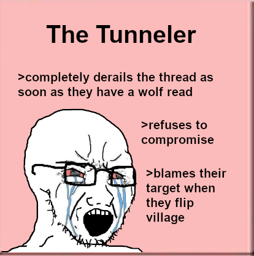

So did I. So did I
So did I until he started pushing on me and making himself look worse.
I expect people to be more villagery than wolves. Appel would have been an easy catch as she basically is playing the “get towncleared d1 then tone down the posting for the rest of the game” and I would have put her back in the PoE except that we already have a third of the players there as they were not really doing anything. You literally can’t win when the village justs posts shit like “Sorry, I’m not feeling like playing this day” or “What’s a CFD” or “I don’t have any scumreads.”
4 Likes
He was =rand for me, thing is since Appel and Derps were more villagery than him then he was stuck in the PoE.
people were overanalyzing my self-pres
which is non-existant
LOL
listen to whysper
she spit straight fire right here
hoping whysper gets quickhammered so i can do this while she’s actually here
:^)
1 Like
I feel like shit for tunneling Whysper tbh.
I did the same thing irt Light in BfA and I managed to snap myself out of the tunnel.
Here… yeah.
1 Like
Frankly for the Whysper deathtunnel I consider myself the responsible party.
Like I said, you’re merciless. It nails down wolves, sure - but it can be very suffocating for townies.
The worst part is that my reads in general are excellent but when I deathtunnel someone that’s a sure sign that I fucked up reading them.
Like in WW where I spent way too much time tunneling Merc.
Or in BfA my reads began going upside down after I tunneled light.
Like, this is effectively the main flaw with my town play.
I can usually get a better read when I don’t get tunnel vision and read the entire game by itself, but fuck.
1 Like
Like in SFoL63 I had an extremely accurate read on the HoB because I was tunneling nobody d2.
alice

this is what she’s saying she is
mostly the 2nd one but still
3 Likes
I actually had some self-reflection here.
I want to know honestly how to quit tunneling.
2 Likes
yeah how’s about we ignore that 3rd part on the rager
Like for the issues IRT PKR/Insanity/Esq I can’t fix as you can’t read people who don’t play.
But I should have found Whysper as town sooner or later. Why didn’t I?
2 Likes
I think maybe ask them their opinion on other players you have semi decent reads on. You’ll probably get more out of people if they didn’t just feel constantly under attack.
1 Like
Tbh, I think this works. Tbh pre-Insurgency I would never tunnel people and my reads would always be extremely accurate.
Like in BfA, here, and WW to an extent my reads were downright horrible as I spent way too much of the game tunneling people. I’m pretty sure as soon as I quit tunneling my reads will return to be as consistent as before.
2 Likes
…but how tf do I stop tunneling? >_>
2 Likes